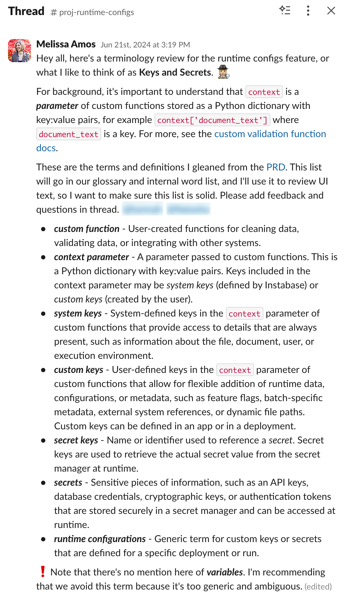
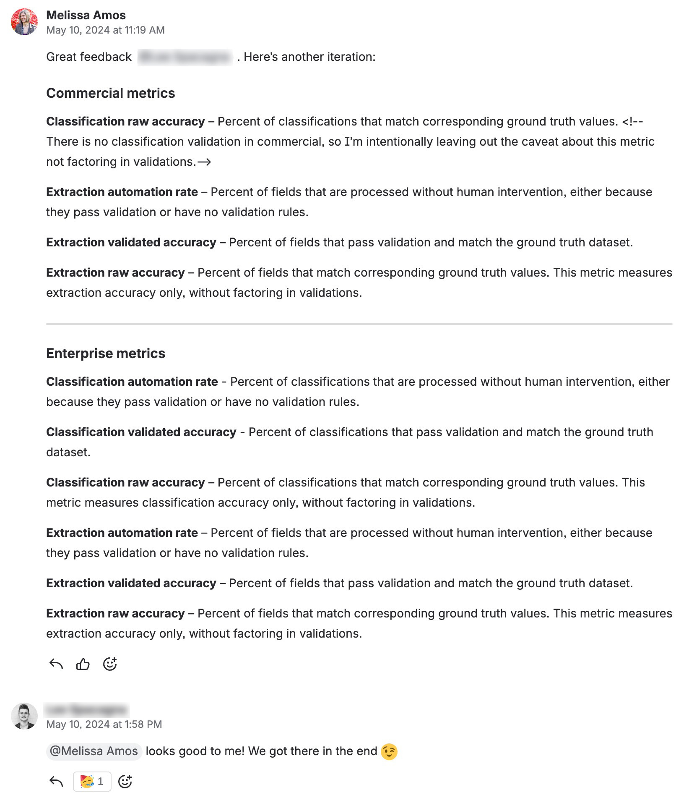
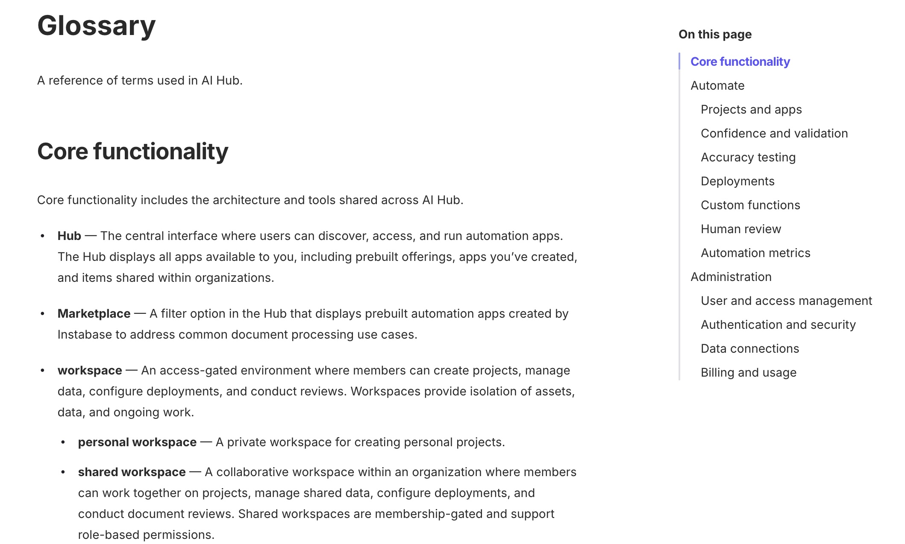

Terminology management
Effective product terminology requires balancing technical accuracy, user mental models, and cross-functional alignment. I establish systematic frameworks for product naming decisions, integrate terminology upstream in product development, and create authoritative references that prevent costly debates and ensure consistency.
Defining product terminology upstream (Instabase)
I developed a comprehensive terminology analysis framework that integrated naming decisions at the PRD phase—before design and implementation—preventing late-stage terminology debates and feature delays. The framework examined dictionary definitions, competitive landscape, industry usage patterns, user mental models, and technical accuracy requirements. When Instabase introduced runtime configuration in AI Hub, this systematic approach resolved the terminology issue early in the product cycle.

Example terminology recommendations for runtime configuration feature, demonstrating proactive terminology leadership and technical depth.
📥 Download: Terminology standardization framework — Presentation outlining terminology methodology.
Operationalizing terminology across the development lifecycle (Instabase)
Beyond defining terms, I ensured terminology was implemented correctly throughout product development. For AI Hub's accuracy measurements, I partnered with Sales Engineering to define precise distinctions between accuracy metrics, reviewed Figma designs to catch technical errors where incorrect metrics were used for specific contexts, validated that new metrics aligned with existing measurement systems, and bridged Product and Engineering when confusion arose about calculation methods. This end-to-end stewardship prevented product errors that would have undermined user trust.

Cross-functional collaboration with Sales Engineering defining accuracy terminology and validating implementation.
Codifying terminology for internal and external use (Instabase)
After repeatedly defining and operationalizing terminology across product development, I created an authoritative 80+ term glossary covering AI Hub features, document processing concepts, collaboration workflows, and integration vocabulary. The glossary served dual purposes: internal source of truth across Product, Engineering, Design, and Professional Services (reducing inconsistencies and support escalations), and external customer-facing reference ensuring users and Instabase teams used consistent language. As the Head of Professional Services noted, it was "very useful for our team but importantly for our customers as well."

Authoritative product glossary adopted across Product, Engineering, Design, and Professional Services.
Business impact
- Reduced development cycles by resolving terminology decisions at PRD phase.
- Prevented costly late-stage iterations from naming debates.
- Built reusable frameworks for systematic naming decisions.
- Improved product accuracy through technically precise language.
- Reduced support burden from terminology confusion.
- Established authoritative references adopted across organizations.